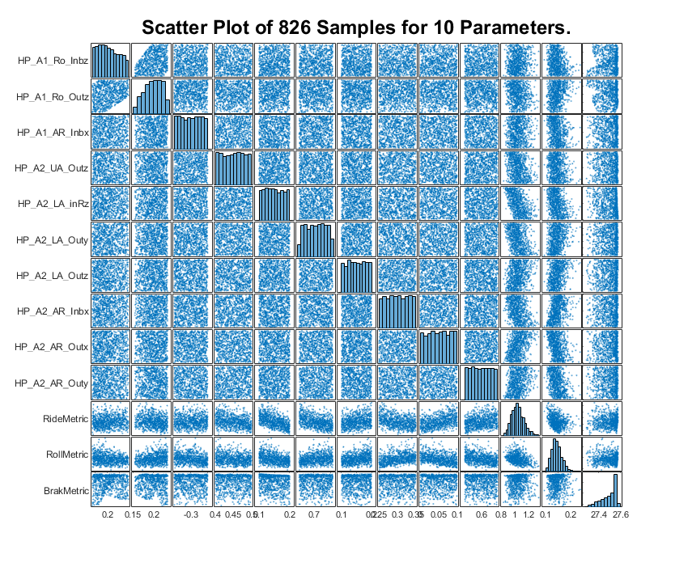
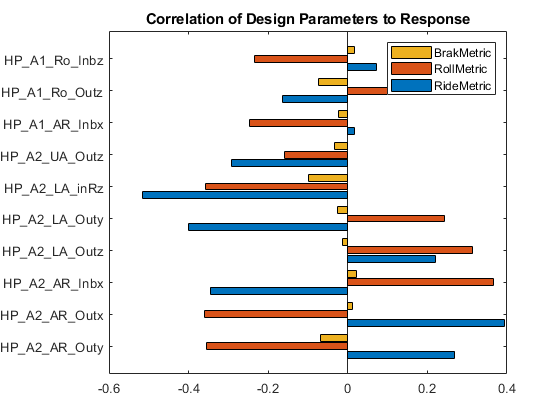
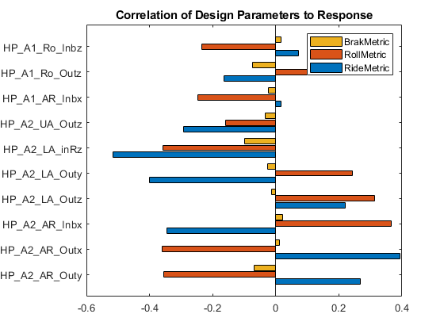
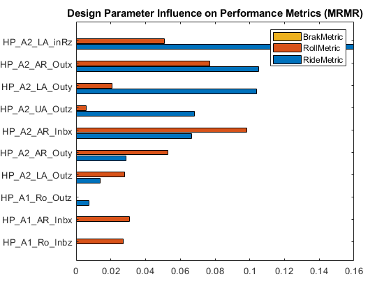
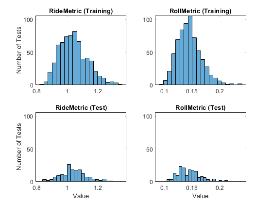
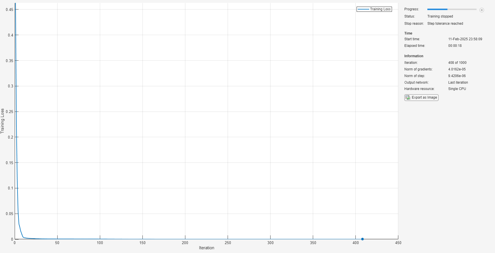
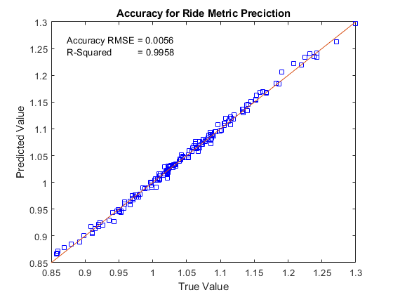
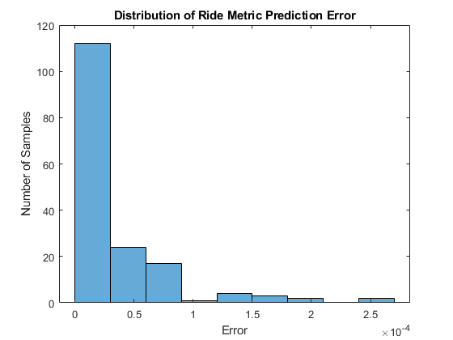
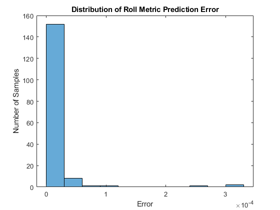
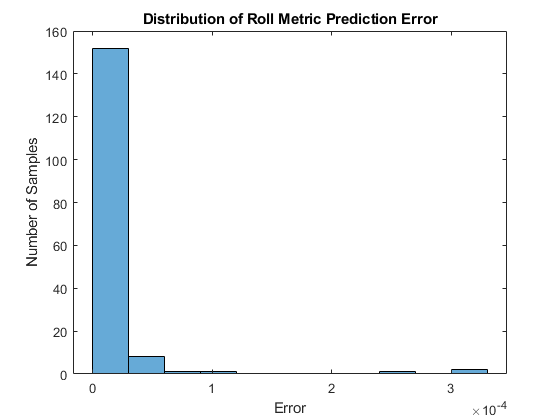

Train and Validate Deep Learning Surrogate Model of Design Space
Contents
Overview
This example trains an AI surrogate model from data generated by a vehicle dynamics model created in Simscape. Deep Learning is used for both the models and model training. The basic steps are:
- Prepare the data collected from a DoE for training and testing
- Select the models that will be trained
- Train the models using a portion of the DoE data
- Evaluate the accuracy of all trained models
- Select the model for use in other steps of the design workflow
The code used to create this documentation is here: suspOpt_Train_Models_deepLrn.m
(return to Optimizing Vehicle Design Using AI and Simscape Overview)
Load Table of Design Parameters
Adjusting the design requires selecting a set of design parameters to tune and setting ranges for those values. That set is defined in a table. For each parameter we specify:
- Label: A short character string to identify the parameter
- Parameter: Location in a MATLAB structure where the parameter is defined
- Index: Index of the value within the structure field
- Use: Indicator if the parameter should be tuned (true/false). Set to "true" until a senstivity analysis has been performed.
- Min: Minimum value for parameter range
- Max: Maximum value for parameter range
- Default: Default value for parameter
ans =
10×7 table
Label Parameter Index Use Min Max Default
_________________ ________________________________________________________________ _____ _____ _____ _____ _______
{'HP_A1_AR_Inbx'} {'Vehicle.Chassis.SuspA1.AntiRollBar.sInboard.Value' } 1 true -0.35 -0.25 -0.3
{'HP_A1_Ro_Inbz'} {'Vehicle.Chassis.SuspA1.Linkage.TrackRod.sInboard.Value' } 3 true 0.175 0.235 0.205
{'HP_A1_Ro_Outz'} {'Vehicle.Chassis.SuspA1.Linkage.TrackRod.sOutboard.Value' } 3 true 0.155 0.235 0.185
{'HP_A2_AR_Inbx'} {'Vehicle.Chassis.SuspA2.AntiRollBar.sInboard.Value' } 1 true 0.25 0.35 0.3
{'HP_A2_AR_Outx'} {'Vehicle.Chassis.SuspA2.AntiRollBar.sOutboard.Value' } 1 true 0 0.1 0.05
{'HP_A2_AR_Outy'} {'Vehicle.Chassis.SuspA2.AntiRollBar.sOutboard.Value' } 2 true 0.55 0.65 0.6
{'HP_A2_LA_Outy'} {'Vehicle.Chassis.SuspA2.Linkage.LowerWishbone.sOutboard.Value'} 2 true 0.656 0.756 0.706
{'HP_A2_LA_Outz'} {'Vehicle.Chassis.SuspA2.Linkage.LowerWishbone.sOutboard.Value'} 3 true 0.1 0.2 0.15
{'HP_A2_LA_inRz'} {'Vehicle.Chassis.SuspA2.Linkage.LowerWishbone.sInboardR.Value'} 3 true 0.1 0.2 0.15
{'HP_A2_UA_Outz'} {'Vehicle.Chassis.SuspA2.Linkage.UpperWishbone.sOutboard.Value'} 3 true 0.4 0.5 0.45
Load and Analyze the Training Data
Load results of DoE that generated training data. The scatter plots show the distribution of points. The constraint affecting the first two parameters is clearly seen in plots located in the upper left portion of the matrix of plots.
Verify Influence of Design Space Parameters on Performance Metrics
The data from the DoE contains information of how the performance metrics (responses) are influenced by the design space parameters (predictors). The function corr shows the correlation. The plots below indicates that the braking metric is not heavily influenced by our design space parameters in the performed test.
 
 Next, rank features for regression using minimum redundancy maximum relevance (MRMR) algorithm. The algorithm minimizes the redundancy of a feature set and maximizes the relevance of a feature set to the response variable. See fsrmrmr documentation for more details. This plot also indicates that the braking metric is not heavily influenced by our design space parameters in the performed test.
Split Data into Training and Test Data
To verify that our trained model predicts responses accurately, we will only use a portion of the data to train the model. The remainder of the data will be used to test the predictions of the performance metrics.
To ensure the training and test data fully represents the design space, we plot a histograms for each metric with the training data set and the testing data set. The distributions look similar to the distribution for the full set of data, indicating that we have good coverage of the design space.
Number of Test Points from DoE: 826 Test points for training: 661 Test points for testing: 165
Train the Networks Using the trainnet Function.
Define a network with a feature input layer and specify the number of features. Also, configure the input layer to normalize the data using Z-score normalization. Train one network per performance metric.
We compare the performance metric predicted by the trained model against the true value from the original Simscape simulation. The most accurate models will be used for the following steps of the workflow.
Roll Metric
 Ride Metric
 
